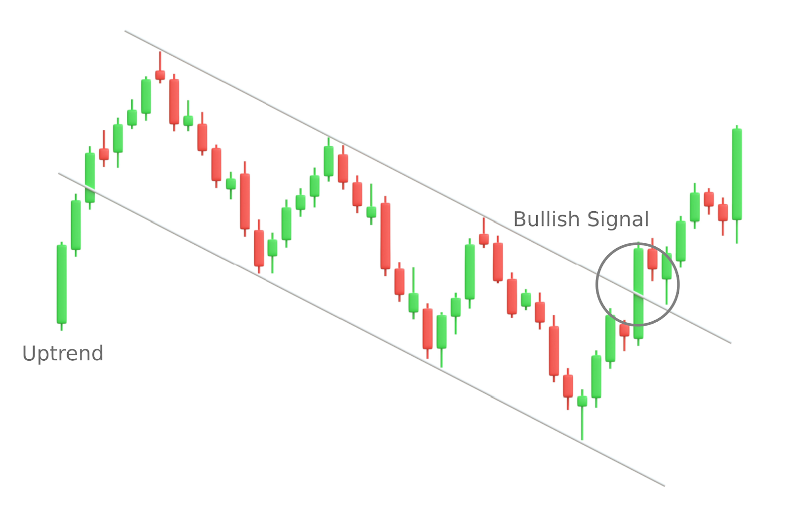

El impacto del próximo Halving en el mercado
Un análisis profundo sobre la reducción de recompensas y su efecto histórico en la volatilidad de los activos digitales.

El mercado de las criptomonedas se prepara para uno de sus eventos cíclicos más importantes. A diferencia de los activos tradicionales, la emisión de ciertas criptomonedas, como Bitcoin, está programada directamente en su código. Este mecanismo reduce la oferta de nuevas monedas a la mitad aproximadamente cada cuatro años, generando lo que los expertos denominan un "shock de oferta".
Históricamente, los meses posteriores a un Halving han estado marcados por un incremento exponencial en la volatilidad. Los mineros ven reducidos sus ingresos en un 50%, lo que obliga a los menos eficientes a apagar sus equipos y liquidar sus reservas. Sin embargo, a largo plazo, la escasez programada tiende a impulsar el valor del activo si la demanda se mantiene constante o aumenta.
Analistas institucionales sugieren que las proyecciones alcistas podrían romper la resistencia actual si el volumen de capital proveniente de los ETFs institucionales (Fondos Cotizados en Bolsa) se mantiene constante durante el último trimestre del año. Este flujo continuo de dinero tradicional hacia el ecosistema crypto añade una capa de estabilidad que no se había visto en ciclos anteriores, cambiando las reglas del juego para los inversores minoristas.